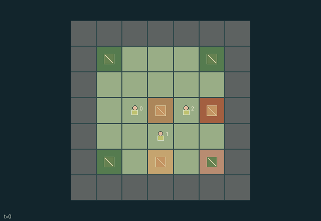

GI187 · Ember Shelter

Original recording scope: 角色0实际可见视角 · Mode: 实际诊断回放
Additional generated state replay (different trajectory / full-state debug)

Survive three finite day/night cycles by building and maintaining a shared insulated, fueled shelter; balance communal materials against individual private stash priorities.
Identity and original contract
3 independently actionable roles; 16 discrete commands per role; 96 native observation columns per role; original horizon 54 steps. Declared per-step reward range: -1 to 2. Observation regime: partially_observable.
Source SHA-256: 14ff1ed4371e402b595847aeb5c0aebb6ddb37a7e2bba3c40c0180399740631d
The objective, rewards, population, map and horizon remain original. A preview is not a success claim.
Objective and gameplay
Survive three finite day/night cycles by building and maintaining a shared insulated, fueled shelter; balance communal materials against individual private stash priorities.
A worker wall, lining or fuel contribution changes every nearby worker later weather protection; kiln production consumes common finite material and creates local smoke, while handoffs and stashing change partner inventory opportunities.
- Three foragers share a timber shelter and a clay kiln; each pack holds only three material units.
- Build with timber and insulate with kiln lining. Both wall and lining must reach two for shared night protection.
- The kiln consumes one timber and one clay, finishes after three transitions, and releases smoke.
- A timber-fed hearth adds four shared heat. Night protection needs enough heat for the current cold severity.
- Day lasts 12 ticks and night six; the third sunrise ends the expedition at tick 54.
- At night, unprotected workers lose health. Shelter protection reaches Manhattan distance two from its footprint.
- Night end wears one wall level. Thick kiln smoke hurts nearby workers and can wear walls.
- Pass materials to adjacent workers or put your private preferred material into the locker for a personal bonus.
- Use actual wall, lining, heat, smoke and weather state to depict a timber-block refuge, warm hearth and cold forest clearing.
Ending: All workers reach zero health, or clock reaches the third sunrise at t=54. Sunrise is natural termination even though it equals H; truncation remains false then.
What this game explores
Information, sensing & communication: Who knows a fact, when it was measured, and whether it was communicated are separate state variables. Test memory or communication using only the same role-visible evidence.
Resource commons & externalities: An action changes a persistent resource or burden that another role also encounters. Compare extraction with maintenance and record the downstream resource trajectory.
Survival, protection & rescue: Protection and repair alter another role's future feasible actions. Record losses, exposure, rescue and infrastructure as well as delivery; survival is determined by the actual kernel.
These are questions supported by rule structure, not observed learning effects.
Play it: operating walkthrough
crucibles play --game gi187Keep Python running and open its printed address. Select this game, set a seed and press Create session. The game itself is always English.
Assign a role range to Host with Assign / take over, or Assign all roles. Invite a second participant with Create player invitation, then assign a disjoint subset. Every original role is available.
For every owned role choose a legal command and press Queue. Arrow keys / WASD queue a declared directional action for the current role camera when available. Space or Advance one joint step advances everyone together. Non-directional games use the selectors.
Unqueued roles use the labelled untrained uniform-legal policy. Take over or release roles before the next step without resetting. Full-state debug is privileged and permanently logged; role cameras preserve permissions. Close the session to retain logs. Server restart does not restore sessions.
Complete command reference
IDs and English labels exactly match the manifest. Availability depends on role, resources, location and phase. An available action can still have no productive effect.
0·Wait
1·Walk north
2·Walk east
3·Walk south
4·Walk west
5·Gather nearby material
6·Build shelter wall
7·Load kiln with timber and clay
8·Take kiln lining
9·Install shelter lining
10·Feed shelter hearth
11·Vent kiln smoke
12·Pass one material
13·Stash private-priority material
14·Repair shelter wall
15·Rest in daytime shelter
Roles and capability identifiers
These original role names describe capabilities, not interchangeable skins. Check each owned role's legal selector before planning handoffs.
agent_0·Cedar: starts with two timber
agent_1·Flax: starts with timber and lining
agent_2·Ash: starts with kiln timber and clay
Information and observation permissions
Map, bodies, inventories, node quantities, construction, kiln, public current weather and aggregate locker contents are public. Role i sees only its preferred material and forecast for night i. Other forecasts and priorities are never entity attributes.
The GIF is full-state debug and may reveal hidden entities or private state. Train on obs[agent], not the picture, state tree or another role's private row. Field slices and visibility are in the original manifest.
Reinforcement-learning integration
import jax
from crucibles_jaxmarl import make
env = make("gi187")
key = jax.random.PRNGKey(0)
key, rk, ak, sk = jax.random.split(key, 4)
obs, state = jax.jit(env.reset)(rk)
actions = env.sample_actions(ak, state)
obs, state, rewards, dones, info = jax.jit(env.step_env)(sk, state, actions)
done = dones["__all__"]Observations are float32 vectors of width 96; actions are scalar int32; masks have 16 entries. Supply all 3 roles each transition. Masked sampling is an engineering reference, not a trained learner.
step_env retains terminal data without reset. step performs outer autoreset and keeps terminal data in info["raw_state"] and info["raw_observation"]. Use dones["__all__"] for episode boundaries; separate completion, failure and time limit in analysis.
JIT or vmap equal identities and shapes. Split independent reset, policy and transition keys. Group different shapes explicitly; do not shrink the population or horizon. Host rendering stays outside training.
Training questions and fair evaluation
Define valid completion from the objective before fitting. Preserve original rewards and also report real deliveries/services, losses, resource state, unresolved episodes and per-role returns. Animation is not a reward signal.
Who knows a fact, when it was measured, and whether it was communicated are separate state variables. Test memory or communication using only the same role-visible evidence.
An action changes a persistent resource or burden that another role also encounters. Compare extraction with maintenance and record the downstream resource trajectory.
Protection and repair alter another role's future feasible actions. Record losses, exposure, rescue and infrastructure as well as delivery; survival is determined by the actual kernel.
Compare memory, communication or centralized critics under matched actor information. Declare critic access; keep actor inputs role-filtered. Match partner/opponent distributions, masks, compute and checkpoint selection. Final tests never enter fitting or selection.
Independent training runs or source-pairing blocks are inferential units; episodes from one policy are not independent training replications. Save hashes, keys, versions, device, time and cost. Negative, zero, failed and indeterminate outcomes are valid. No trained checkpoint or target score is supplied.
Classification and evidence
Overlapping editorial labels are reading aids, not proof of novelty, difficulty, strategic equivalence or learning effects.
- Information, sensing & communication
- Evidence
manifest.task.objective: Survive three finite day/night cycles by building and maintaining a shared insulated, fueled shelter; balance communal materials against individual private stash priorities.
- Evidence
manifest.actions.13: Stash private-priority material
- Evidence
scene.rules.7: Pass materials to adjacent workers or put your private preferred material into the locker for a personal bonus.
- Resource commons & externalities
- Evidence
scene.rules.3: A timber-fed hearth adds four shared heat. Night protection needs enough heat for the current cold severity.
- Evidence
scene.rules.8: Use actual wall, lining, heat, smoke and weather state to depict a timber-block refuge, warm hearth and cold forest clearing.
- Survival, protection & rescue
- Evidence
manifest.task.objective: Survive three finite day/night cycles by building and maintaining a shared insulated, fueled shelter; balance communal materials against individual private stash priorities.
- Evidence
manifest.task.interaction: A worker wall, lining or fuel contribution changes every nearby worker later weather protection; kiln production consumes common finite material and creates local smoke, while handoffs and stashing change partner inventory opportunities.
- Evidence
manifest.actions.6: Build shelter wall
Source, receipts and preview limits
The additional generated state GIF replays saved untrained legal actions through the original kernel. At most 25 actual endpoints include initial and terminal state; no invented interpolation. It is full-state debug, not the role observation. Where an original scene preview exists, it is displayed first with its own recorded information scope. The two recordings may use different trajectories and views.
Original source, observation slices, manifest and mechanism
Native receipt · Presentation receipt
Engineering passes do not establish learning. Nonzero floating differences remain recorded and undetermined; no new tolerance was introduced. Human scores remain unverified.